Linux
入门概述
Linux是一套免费使用和自由传播的类Unix操作系统，是一个基于POSIX（可移植操作系统接口）和UNIX的多用户、多任务、支持多线程和多CPU的操作系统。
Linux能运行主要的UNIX工具软件、应用程序和网络协议，它支持32位和64位硬件。Linux继承了Unix以网络为核心的设计思想，是一个性能稳定的多用户网络操作系统。
Linux的发行版：简单点说就是将Linux内核与应用软件做一个打包。
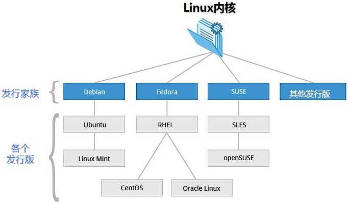目前市面上较知名的发行版有：Ubuntu、RedHat、CentOS、Debian、Fedora、SuSE、OpenSUSE、Arch Linux、SolusOS等。
Linux应用领域：今天各种场合都有使用各种Linux发行版，从嵌入式设备到超级计算机，并且在服务器领域确定了地位，通常服务器使用LAMP（Linux + Apache + MySQL + PHP）或LNMP（Linux + Nginx+ MySQL + PHP）组合。
Linux vs Windows
| 比较 | Windows | Linux |
|---|---|---|
| 界面 | 界面统一，外壳程序固定所有Windows程序菜单几乎一致，快捷键也几乎相同 | 图形界面风格依发布版不同而不同，可能互不兼容。GNU/Linux的终端机是从UNIX传承下来，基本命令和操作方法也几乎一致。 |
| 驱动程序 | 驱动程序丰富，版本更新频繁。默认安装程序里面一般包含有该版本发布时流行的硬件驱动程序，之后所出的新硬件驱动依赖于硬件厂商提供。对于一些老硬件，如果没有了原配的驱动有时很难支持。另外，有时硬件厂商未提供所需版本的Windows下的驱动，也会比较头痛。 | 由志愿者开发，由Linux核心开发小组发布，很多硬件厂商基于版权考虑并未提供驱动程序，尽管多数无需手动安装，但是涉及安装则相对复杂，使得新用户面对驱动程序问题（是否存在和安装方法）会一筹莫展。但是在开源开发模式下，许多老硬件尽管在Windows下很难支持的也容易找到驱动。HP、Intel、AMD等硬件厂商逐步不同程度支持开源驱动，问题正在得到缓解。 |
| 使用 | 使用比较简单，容易入门。图形化界面对没有计算机背景知识的用户使用十分有利。 | 图形界面使用简单，容易入门。文字界面，需要学习才能掌握。 |
| 学习 | 系统构造复杂、变化频繁，且知识、技能淘汰快，深入学习困难。 | 系统构造简单、稳定，且知识、技能传承性好，深入学习相对容易。 |
| 软件 | 每一种特定功能可能都需要商业软件的支持，需要购买相应的授权。 | 大部分软件都可以自由获取，同样功能的软件选择较少。 |
走进Linux系统
采用CentOS系统，可通过安装虚拟机或是使用云服务器进行操作。
开机
开机会启动许多程序，它们在Windows中叫做服务（service），在Linux中就叫做守护进程（daemon）。
关机
# 将数据由内存同步到硬盘中 |
不管是重启系统还是关闭系统，首先要运行
sync命令，把内存中的数据写到磁盘中。
系统目录结构
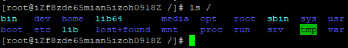Linux的一切资源都挂载在这个/根节点下，目录解释：
- /bin：bin是Binaries（二进制文件）的缩写, 这个目录存放着最经常使用的命令。
- /boot： 这里存放的是启动Linux时使用的一些核心文件，包括一些链接文件以及镜像文件。
- /dev ： dev是Device（设备）的缩写, 存放的是Linux的外部设备，在Linux中访问设备的方式和访问文件的方式是相同的。
- /etc： 这个目录用来存放所有的系统管理所需要的配置文件和子目录。
- /home：用户的主目录，在Linux中，每个用户都有一个自己的目录，一般该目录名是以用户的账号命名的。
- /lib：这个目录里存放着系统最基本的动态链接共享库，其作用类似于Windows里的DLL文件。
- /lost+found：这个目录一般情况下是空的，当系统非法关机后，这里就存放了一些文件。
- /media：Linux系统会自动识别一些设备，例如U盘、光驱等等，当识别后，Linux会把识别的设备挂载到这个目录下。
- /mnt：系统提供该目录是为了让用户临时挂载别的文件系统的，我们可以将光驱挂载在/mnt/上，然后进入该目录就可以查看光驱里的内容了。
- /opt：这是给主机额外安装软件所摆放的目录，比如你安装一个ORACLE数据库则就可以放到这个目录下。默认是空的。
- /proc：proc是Processes（进程）的缩写，/proc是一种伪文件系统（也即虚拟文件系统），存储的是当前内核运行状态的一系列特殊文件，这个目录是一个虚拟的目录，它是系统内存的映射，我们可以通过直接访问这个目录来获取系统信息。
- /root：该目录为系统管理员，也称作超级权限者的用户主目录。
- /sbin：s就是Super User的意思，是Superuser Binaries（超级用户的二进制文件）的缩写，这里存放的是系统管理员使用的系统管理程序。
- /srv：该目录存放一些服务启动之后需要提取的数据。
- /sys：这是Linux2.6内核的一个很大的变化。该目录下安装了2.6内核中新出现的一个文件系统sysfs。sysfs文件系统集成了下面3种文件系统的信息：针对进程信息的proc文件系统、针对设备的devfs文件系统以及针对伪终端的devpts文件系统。该文件系统是内核设备树的一个直观反映。当一个内核对象被创建的时候，对应的文件和目录也在内核对象子系统中被创建。
- /tmp：tmp是temporary（临时）的缩写，这个目录是用来存放一些临时文件的。
- /usr： usr是unix shared resources（共享资源）的缩写，这是一个非常重要的目录，用户的很多应用程序和文件都放在这个目录下，类似于windows下的program files目录。
- /usr/bin： 系统用户使用的应用程序。
- /usr/sbin： 超级用户使用的比较高级的管理程序和系统守护程序。
- /usr/src： 内核源代码默认的放置目录。
- /var：这个目录中存放着在不断扩充着的东西，我们习惯将那些经常被修改的目录放在这个目录下，包括各种日志文件。
- /run：是一个临时文件系统，存储系统启动以来的信息。当系统重启时，这个目录下的文件应该被删掉或清除。
远程登录
Linux系统中通过ssh服务实现远程登录功能，默认ssh服务端口号为22。
Windows系统上远程登录客户端有SecureCRT、Putty、SSH Secure Shell、XShell等，本文使用Putty来登录远程服务器。
Putty下载地址：https://www.putty.org/
打开putty，在Host Name（or IP address）下面的框中输入你要登录的远程服务器IP，然后回车。
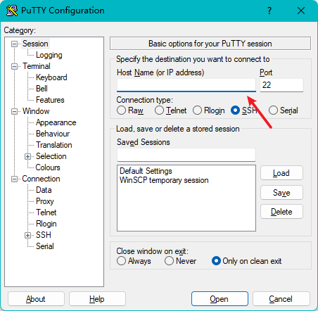此时提示我们输入要登录的用户名。
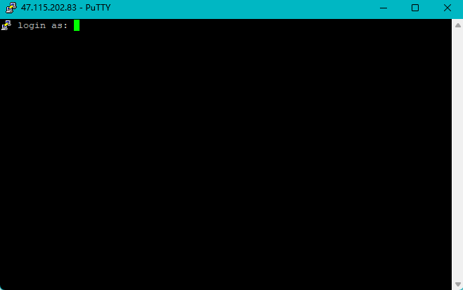输入root然后回车，再输入密码就能登录到远程的Linux系统了。
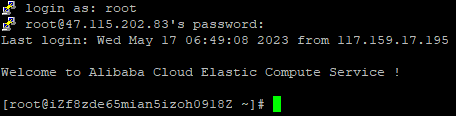目录管理
以下是常见的处理目录的命令，可以使用man [命令]来查看各个命令的使用文档，如：man ls
ls：列出目录，语法：
ls [参数] 目录名称，参数：- -a：列出所有文件，包括隐藏文件（开头为
.的文件）； - -l：长数据串列出，包含文件的属性和权限，不包含隐藏文件。
- -a：列出所有文件，包括隐藏文件（开头为
cd：cd是Change Directory的缩写，用于切换工作目录。语法：
cd [相对路径或绝对路径]cd、cd ~和cd $HOME：跳转到当前用户的家目录- root用户，cd ~ 相当于 cd /root
- 普通用户，cd ~ 相当于cd /home/当前用户名
cd -：返回进入此目录之前所在目录pwd：pwd是Print Working Directory的缩写，用于显示当前所在目录。
可选参数：-P，显示出确实的路径，而非使用链接（link）路径。
# /var/mail是一个链接档
[root@iZf8zde65mian5izoh0918Z ~]# cd /var/mail
# 显示当前所在目录
[root@iZf8zde65mian5izoh0918Z mail]# pwd
/var/mail
# 附加参数
[root@iZf8zde65mian5izoh0918Z mail]# pwd -P
/var/spool/mail
# 原因：因为/var/mail是链接档，链接到/var/spool/mail
[root@iZf8zde65mian5izoh0918Z mail]# ls -l /var/mail
lrwxrwxrwx. 1 root root 10 Jul 11 2019 /var/mail -> spool/mailmkdir：创建目录
# 创建test目录
mkdir test
# 创建多级目录，附加-p参数
mkdir -p test1/test2/test3
# 配置文件权限，附加-m参数，例如：创建权限为rwx--x--x的目录，创建后可使用ls -l进行查看
mkdir -m 711 test4rmdir：删除空目录
rmdir test
# 递归删除多级目录
rmdir -p test1/test2/test3rmdir仅能删除空目录，可使用rm命令来删除非空目录。
cp：复制文件或目录，语法：
cp [-adfilprsu] 来源档(source) 目标档(destination)，参数：- -a：相当于-pdr的意思；
- -d：若来源档为链接档的属性（link file），则复制链接档属性而非文件本身；
- -f：为强制的意思，若目标文件已经存在且无法开启，则移除后再尝试一次；
- -i：若目标档已经存在，在覆盖时会进行询问；
- -l：进行硬式链接的链接档创建，而非复制文件本身；
- -p：连同文件的属性一起复制过去，而非使用默认属性（备份常用）；
- -r：递归持续复制，用于目录的复制行为；
- -s：复制成为符号链接档，即快捷文件；
- -u：若destination比source旧，则升级destination。
rm：移除文件或目录，语法：
rm [-fir] 文件或目录，参数：- -f：就是force的意思，忽略不存在的文件，不会出现警告信息，强制删除；
- -i：互动模式，删除前进行询问；
- -r：递归删除，最常用在目录的删除。
请勿使用
rm -rf /！！！mv：移动文件与目录，或修改文件与目录的名称，语法：
mv [-fiu] source destination，参数：- -f：强制，如果目标文件已经存在，不会询问而直接覆盖；
- -i：若目标文件已存在，则会询问是否覆盖；
- -u：若目标文件已存在，且source比较新，才会更新。
# 创建目录test
[root@iZf8zde65mian5izoh0918Z home]# mkdir test
[root@iZf8zde65mian5izoh0918Z home]# ls
llc test
# 重命名
[root@iZf8zde65mian5izoh0918Z home]# mv test newTest
[root@iZf8zde65mian5izoh0918Z home]# ls
llc newTest
文件基本属性
查看文件属性
Linux系统是一种典型的多用户系统，不同的用户处于不同的地位，拥有不同的权限。为了保护系统的安全性，Linux系统对不同的用户访问同一文件（包括目录文件）的权限做了不同的规定。
在Linux中可以使用ll或者ls –l命令来显示一个文件的属性以及文件所属的用户和组。
实例中，boot文件的第一个属性用d表示，代表该文件是一个目录文件。在Linux中第一个字符代表这个文件是目录、文件或链接文件等等。
- 当为
d则是目录 - 当为
-则是文件 - 若为
l则表示为链接文档（link file） - 若为
b则表示为装置文件里面的可供储存的接口设备（可随机存取装置） - 若为
c则表示为装置文件里面的串行端口设备，例如键盘、鼠标（一次性读取装置）
接下来的字符中，以三个为一组，且均为rwx的三个参数的组合。其中，r代表可读（read）、w代表可写（write）、x代表可执行（execute）。要注意的是，这三个权限的位置不会改变，如果没有权限，就会出现减号-。
每个文件的属性由左边第一部分的10个字符来确定，如下图：
从左至右用0-9这些数字来表示。第0位确定文件类型，第1-3位确定属主（该文件的所有者）拥有该文件的权限。第4-6位确定属组（所有者的同组用户）拥有该文件的权限，第7-9位确定其他用户拥有该文件的权限。其中：
第1、4、7位表示读权限，如果用r字符表示，则有读权限，如果用-字符表示，则没有读权限。
第2、5、8位表示写权限，如果用w字符表示，则有写权限，如果用-字符表示，则没有写权限。
第3、6、9位表示可执行权限，如果用x字符表示，则有执行权限，如果用-字符表示，则没有执行权限。
对于文件来说，它都有一个特定的所有者，也就是对该文件具有所有权的用户。同时，在Linux系统中，用户是按组分类的，一个用户属于一个或多个组。文件所有者以外的用户又可以分为文件所有者的同组用户和其他用户。因此，Linux系统按文件所有者、文件所有者同组用户和其他用户来规定了不同的文件访问权限。
修改文件属性
chgrp：更改文件
属组chgrp [-R] 属组名 文件名
-R：递归更改文件属组，就是在更改某个目录文件的属组时，如果加上-R的参数，那么该目录下的所有文件的属组都会更改。
chown：更改文件
属主，也可以同时更改文件属组chown [–R] 属主名 文件名
chown [-R] 属主名:属组名 文件名chmod：更改文件9个属性
Linux文件属性有两种设置方法，一种是数字（常用），一种是符号。
Linux文件的基本权限有九个，分别是owner/group/others（拥有者/组/其他）三种身份各有自己的read/write/execute权限，可以使用数字来代表各个权限：
- r：4
- w：2
- x：1
每种身份（owner/group/others）各自的三个权限（r/w/x）对应数值是需要累加的，例如当权限为：
-rwxrwx---，数值则是：- owner = rwx = 4+2+1 = 7
- group = rwx = 4+2+1 = 7
- others = — = 0+0+0 = 0
变更权限的指令chmod的语法：
chmod [-R] xyz 文件或目录
# 其中xyz为rwx属性数值相加的结果，例如770。
chmod 770 filename
文件内容查看
Linux系统中使用以下命令来查看文件的内容：
cat：从第一行开始显示文件内容，参数：
-A：相当于
-vET的整合选项，可列出一些特殊字符而不是空白而已；-b：列出行号，仅针对非空白行做行号显示，空白行不标行号；
-E：将结尾的换行以
$显示出来；-n：列出行号，连同空白行也会有行号；
-T：将
Tab键以^I显示出来；-v：列出一些看不出来的特殊字符。
tac：tac与cat命令刚好相反，从最后一行开始显示。
nl：显示行号，语法：
nl [-bnw] 文件，参数：-b：指定行号显示的方式，主要有两种：
-b a：无论是否为空行，都列出行号（类似cat -n）。
-b t：空白行不标行号（默认值）。
-n：列出行号表示的方法，主要有三种：
-n ln：行号在荧幕的最左方显示。
-n rn：行号在自己栏位的最右方显示，且不加0。
-n rz：行号在自己栏位的最右方显示，且加0。
-w：行号占用的位数。
[root@iZf8zde65mian5izoh0918Z network-scripts]# nl ifcfg-eth0
1 DEVICE=eth0
2 BOOTPROTO=dhcp
3 ONBOOT=yes
[root@iZf8zde65mian5izoh0918Z network-scripts]# nl -n ln ifcfg-eth0
1 DEVICE=eth0
2 BOOTPROTO=dhcp
3 ONBOOT=yes
[root@iZf8zde65mian5izoh0918Z network-scripts]# nl -n rn ifcfg-eth0
1 DEVICE=eth0
2 BOOTPROTO=dhcp
3 ONBOOT=yes
[root@iZf8zde65mian5izoh0918Z network-scripts]# nl -n rz ifcfg-eth0
000001 DEVICE=eth0
000002 BOOTPROTO=dhcp
000003 ONBOOT=yes
[root@iZf8zde65mian5izoh0918Z network-scripts]# nl -n rz -w 2 ifcfg-eth0
01 DEVICE=eth0
02 BOOTPROTO=dhcp
03 ONBOOT=yesmore：一页一页的显示文件内容
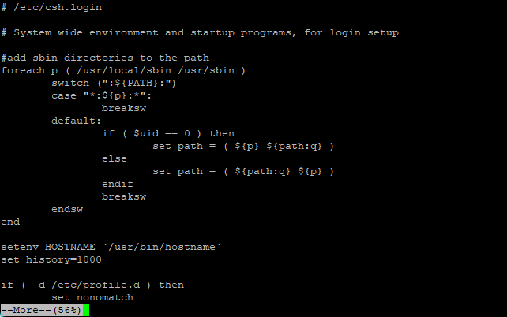在more这个程序的运行过程中，可以使用以下按键：
- 空格：代表向下翻一页
- 回车：代表向下翻一行
:f：输出文件名及当前所在行q：离开more- b或ctrl+b：代表往回翻页（只对文件有用，对管线无用）
less：与more类似。
- 空格：代表向下翻一页
- 回车：代表向下翻一行
- 上下键：表示向上翻一行或向下翻一行
:f：输出文件名及当前所在行q：离开less- b或ctrl+b：代表往回翻页
- /字符串：向下搜寻字符串
- ?字符串：向上搜寻字符串
可通过
n或N进行向下或向上搜寻，当使用/*搜寻时n代表下一个，N代表上一个，使用?*搜寻时相反。head：显示文件前面几行
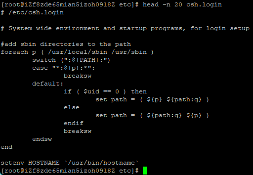head [-n number] 文件
# number表示显示几行，默认显示前面10行tail：显示文件后面几行
tail [-n number] 文件
# 默认显示最后10行其他
ifconfig：此命令用于查看网络配置网络配置目录，文件地址 /etc/sysconfig/network-scripts/
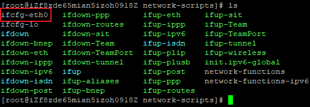
链接
Linux链接分两种，一种被称为硬链接，另一种被称为软链接（符号链接）。默认情况下，ln命令产生硬链接。
硬链接
硬链接指通过索引节点来进行链接。在Linux文件系统中，保存在磁盘分区中的文件不管是什么类型都给它分配一个编号，称为索引节点号（Inode Index）。在Linux中，多个文件名指向同一索引节点是存在的。比如：A是B的硬链接（A和B都是文件名），则A的目录项中的inode节点号与B的目录项中的inode节点号相同，即一个inode节点对应两个不同的文件名，两个文件名指向同一个文件，A和B对文件系统来说是完全平等的，删除其中任何一个都不会影响另外一个的访问。
硬链接的作用是允许一个文件拥有多个有效路径名，这样用户就可以建立硬链接到重要文件，以防止“误删”的功能。其原因如上所述，因为对应该目录的索引节点有一个以上的链接，只删除一个链接并不影响索引节点本身和其它的链接，只有当最后一个链接被删除后，文件的数据块及目录的链接才会被释放。也就是说，文件真正删除的条件是与之相关的所有硬链接文件均被删除。
软链接
另外一种链接称之为符号链接，也叫软链接。软链接文件类似于Windows的快捷方式，它实际上是一个特殊的文件。在符号链接中，文件实际上是一个文本文件，其中包含的有另一文件的位置信息。比如：A是B的软链接（A和B都是文件名），A的目录项中的inode节点号与B的目录项中的inode节点号不相同，A和B指向的是两个不同的inode，继而指向两块不同的数据块。但是A的数据块中存放的只是B的路径名（可以根据这个找到B的目录项）。A和B之间是“主从”关系，如果B被删除了，A仍然存在（因为两个是不同的文件），但指向的是一个无效的链接。
测试
[root@iZf8zde65mian5izoh0918Z home]# touch f1 # 创建测试文件f1 |
从上面的结果中可以看出，硬链接文件f2与原文件f1的inode节点相同，均为664867，然而软链接文件f3的inode节点不同。
# echo向文件写入字符串 |
通过上面的测试可以看出：当删除原始文件f1后，硬链接f2不受影响，但是软链接f3无效。
删除软链接f3，对f1、f2无影响；
删除硬链接f2，对f1、f3无影响；
删除原文件f1，对硬链接f2无影响，但会导致软链接f3失效；
同时删除原文件f1和硬链接f2，整个文件会真正的被删除。
用户和用户组管理
Linux系统是一个多用户多任务的分时操作系统，任何一个要使用系统资源的用户，都必须首先向系统管理员申请一个账号，然后以这个账号的身份进入系统。
用户的账号一方面可以帮助系统管理员对使用系统的用户进行跟踪，并控制他们对系统资源的访问；另一方面也可以帮助用户组织文件，并为用户提供安全性保护。
每个用户账号都拥有一个唯一的用户名和各自的口令。用户在登录时输入正确的用户名和口令后，就能够进入系统和自己的主目录。
实现用户账号的管理，要完成的工作主要有如下几个方面：
- 用户账号的添加、修改与删除。
- 用户口令的管理。
- 用户组的管理。
用户账号管理
添加账号
添加用户账号就是在系统中创建一个新账号，然后为新账号分配用户号、用户组、主目录和登录Shell等资源。刚添加的账号是被锁定的，无法使用。
语法：useradd 选项 用户名，其中用户名指新账号的登录名。选项如下：
- -c：comment，指定一段注释性描述。
- -d：目录，指定用户主目录，如果此目录不存在，则同时使用-m选项，可以创建主目录。
- -g：用户组，指定用户所属的用户组。
- -G：用户组，指定用户所属的附加组。
- -m：使用者目录如不存在则自动建立。
- -s：Shell文件，指定用户的登录Shell。
- -u：用户号，指定用户的用户号，如果同时有-o选项，则可以重复使用其他用户的标识号。
[root@iZf8zde65mian5izoh0918Z /]# cd /home |
默认创建同名用户主目录，若该目录存在则提示目录已存在。
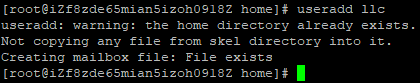增加用户账号就是在
/etc/passwd文件中为新用户增加一条记录，同时更新其他系统文件如/etc/shadow、/etc/group等。
root:x:0:0:root:/root:/bin/bash
...
llc:x:1000:1000::/home/llc:/bin/bash
[root@iZf8zde65mian5izoh0918Z home]# cat /etc/shadow
root:$6$7w931/Q.$Y4WlA3o.xKsgPECoLpX8dleBO5EoXmo9THNePvqvkg0ZK07B0O9bSXCdgc1JDi4llK39R804VkRufJIQbfQYT0:19462:0:99999:7:::
...
llc:!!:19496:0:99999:7:::
[root@iZf8zde65mian5izoh0918Z home]# cat /etc/group
root:x:0:
...
llc:x:1000:
切换用户
# 从root切换到普通用户 |
删除用户
删除用户账号就是要将/etc/passwd等系统文件中的该用户记录删除，必要时还删除用户的主目录。
语法：userdel 选项 用户名，常用的选项是-r，它的作用是把用户的主目录一起删除。
userdel -r llc |
修改账号
修改用户账号就是根据实际情况更改用户的有关属性，如用户号、主目录、用户组、登录Shell等。
语法：usermod 选项 用户名，常用的选项包括-c、-d、-m、-g、-G、-s、-u以及-o等，这些选项的意义与useradd命令中的选项一样，可以为用户指定新的资源值。
[root@iZf8zde65mian5izoh0918Z home]# useradd llc |
使用
-l选项修改用户名，例如：usermod -l lc llc，将用户llc的用户名改为lc。
用户口令管理
用户账号刚创建时没有口令，必须为其指定口令后才可以使用。
超级用户可以为自己或其他用户指定口令，普通用户只能修改自己的口令。
语法：passwd 选项 用户名，选项：
- -l：锁定口令，即禁用账号。
- -u：口令解锁。
- -d：使账号无口令。
- -f：强迫用户下次登录时修改口令。
如果默认用户名，即用户名为空，则表示修改当前用户的口令。
如果是超级用户，可以使用下面的命令指定任何用户的口令：
passwd llc |
如果是普通用户，可以使用下面的命令修改自己的口令：
passwd |
普通用户修改自己的口令时，passwd命令会先询问原口令，验证后再要求用户输入两遍新口令，如果两次输入的口令一致，则将这个口令指定给用户；而超级用户为用户指定口令时，不需要知道原口令。
为用户指定空口令时，执行以下命令：
passwd -d llc |
passwd命令还可以使用-l（lock）选项锁定某一用户，使其不能登录。
passwd -l llc |
用户组管理
每个用户都有一个用户组，系统可以对一个用户组中的所有用户进行集中管理。不同Linux系统对用户组的规定有所不同，如Linux下的用户属于与它同名的用户组，这个用户组在创建用户时同时创建。
用户组的管理涉及用户组的添加、修改和删除，实际上就是对/etc/group文件的更新。
添加用户组
语法：groupadd 选项 用户组，选项：
- -g：GID，指定新用户组的组标识号（GID）。
- -o：一般与-g选项同时使用，表示新用户组的GID可以与系统已有用户组的GID相同。
groupadd group1 |
删除用户组
语法：groupdel 用户组
# 从系统中删除组group1 |
修改用户组的属性
语法：groupmod 选项 用户组，选项：
- -g：GID，为用户组指定新的组标识号。
- -o：与-g选项同时使用，用户组的新GID可以与系统已有用户组的GID相同。
- -n：用户组的新名称。
# 将组group2的组标识号修改为102。 |
切换组
如果一个用户同时属于多个用户组，那么用户可以在用户组之间切换，以便具有其他用户组的权限。
用户可以在登录后，使用命令newgrp切换到其他用户组，这个命令的参数就是目标用户组。
newgrp root |
与用户账号有关的系统文件
完成用户管理的工作有许多种方法，但是每一种方法实际上都是对有关的系统文件进行修改。
与用户和用户组相关的信息都存放在一些系统文件中，这些文件包括/etc/passwd、/etc/shadow、/etc/group等。
/etc/passwd
/etc/passwd文件是用户管理工作涉及的最重要的一个文件，Linux系统中的每个用户都在/etc/passwd文件中有一个对应的记录行，它记录了这个用户的一些基本属性。这个文件对所有用户都是可读的，它的内容类似下面的例子：
[root@iZf8zde65mian5izoh0918Z ~]# cat /etc/passwd |
从上面的例子我们可以看到，/etc/passwd中一行记录对应着一个用户，每行记录又被冒号:分隔为7个字段，其格式和具体含义如下：
用户名:口令:用户标识号:组标识号:注释性描述:主目录:登录Shell |
用户名：代表用户账号的字符串。
通常长度不超过8个字符，并且由大小写字母和/或数字组成。登录名中不能有冒号
:，因为冒号在这里是分隔符。为了兼容起见，登录名中最好不要包含点字符
.，并且不使用连字符-和加号+打头。口令：一些系统中，存放着加密后的用户口令字。
虽然这个字段存放的只是用户口令的加密串，不是明文，但是由于/etc/passwd文件对所有用户都可读，所以这仍是一个安全隐患。因此，现在许多Linux系统（如SVR4）都使用了shadow技术，把真正的加密后的用户口令字存放到/etc/shadow文件中，而在/etc/passwd文件的口令字段中只存放一个特殊的字符，例如”x“或者”*“。
用户标识号：整数，系统内部用它来标识用户。
一般情况下它与用户名是一一对应的，如果几个用户名对应的用户标识号是一样的，系统内部将把它们视为同一个用户，但是它们可以有不同的口令、不同的主目录以及不同的登录Shell等。
通常用户标识号的取值范围是0～65 535。0是超级用户root的标识号，1～99由系统保留，作为管理账号，普通用户的标识号从100开始。在Linux系统中，这个界限是500。
组标识号：记录用户所属的用户组。
它对应着/etc/group文件中的一条记录。
注释性描述：记录用户的一些个人情况。
例如用户的真实姓名、电话、地址等，这个字段并没有什么实际的用途。在不同的Linux系统中，这个字段的格式并没有统一。在许多Linux系统中，这个字段存放的是一段任意的注释性描述文字，用作finger命令的输出。
主目录：用户的起始工作目录。
它是用户在登录到系统之后所处的目录。在大多数系统中，各用户的主目录都被组织在同一个特定的目录下，而用户主目录的名称就是该用户的登录名。各用户对自己的主目录有读、写、执行（搜索）权限，其他用户对此目录的访问权限则根据具体情况设置。
用户登录后，要启动一个进程，负责将用户的操作传给内核，这个进程是用户登录到系统后运行的命令解释器或某个特定的程序，即Shell。
Shell是用户与Linux系统之间的接口。Linux的Shell有许多种，每种都有不同的特点。常用的有sh（Bourne Shell）、csh（C Shell）、ksh（Korn Shell）、tcsh（TENEX/TOPS-20 type C Shell）、bash（Bourne Again Shell）等。
系统管理员可以根据系统情况和用户习惯为用户指定某个Shell。如果不指定Shell，那么系统使用sh为默认的登录Shell，即这个字段的值为/bin/sh。
用户的登录Shell也可以指定为某个特定的程序（此程序不是一个命令解释器）。
利用这一特点，我们可以限制用户只能运行指定的应用程序，在该应用程序运行结束后，用户就自动退出了系统。有些Linux系统要求只有那些在系统中登记了的程序才能出现在这个字段中。
系统中有一类用户称为伪用户（pseudo users）。
这些用户在/etc/passwd文件中也占有一条记录，但是不能登录，因为它们的登录Shell为空。它们的存在主要是方便系统管理，满足相应的系统进程对文件属主的要求。
常见的伪用户如下所示：
伪 用 户 含 义
bin 拥有可执行的用户命令文件
sys 拥有系统文件
adm 拥有帐户文件
uucp UUCP使用
lp lp或lpd子系统使用
nobody NFS使用除了上面列出的伪用户外，还有许多标准的伪用户，例如：audit、cron、mail、usenet等，它们也都各自为相关的进程和文件所需要。
/etc/shadow
由于/etc/passwd文件是所有用户都可读的，如果用户的密码太简单或规律比较明显的话，一台普通的计算机就能够很容易地将它破解，因此对安全性要求较高的Linux系统都把加密后的口令字分离出来，单独存放在一个文件中，这个文件是/etc/shadow文件，只有超级用户才拥有该文件读权限，这就保证了用户密码的安全性。
[root@iZf8zde65mian5izoh0918Z ~]# cat /etc/shadow |
/etc/shadow中的记录行与/etc/passwd中的一一对应，它由pwconv命令根据/etc/passwd中的数据自动产生。它的文件格式与/etc/passwd类似，由若干个字段组成，字段之间用:隔开，这些字段是：
登录名:加密口令:最后一次修改时间:最小时间间隔:最大时间间隔:警告时间:不活动时间:失效时间:标志 |
- 登录名：与/etc/passwd文件中的登录名相一致的用户账号
- 口令：字段存放的是加密后的用户口令字，长度为13个字符。如果为空，则对应用户没有口令，登录时不需要口令；如果含有不属于集合{ ./0-9A-Za-z }中的字符，则对应的用户不能登录。
- 最后一次修改时间：表示的是从某个时刻起，到用户最后一次修改口令时的天数。时间起点对不同的系统可能不一样。例如在SCO Linux 中，这个时间起点是1970年1月1日。
- 最小时间间隔：指的是两次修改口令之间所需的最小天数。
- 最大时间间隔：指的是口令保持有效的最大天数。
- 警告时间：表示的是从系统开始警告用户到用户密码正式失效之间的天数。
- 不活动时间：表示的是用户没有登录活动但账号仍能保持有效的最大天数。
- 失效时间：字段给出的是一个绝对的天数，如果使用了这个字段，那么就给出相应账号的生存期。期满后，该账号就不再是一个合法的账号，也就不能再用来登录了。
/etc/group
用户组的所有信息都存放在/etc/group文件中。
将用户分组是Linux系统中对用户进行管理及控制访问权限的一种手段。每个用户都属于某个用户组；一个组中可以有多个用户，一个用户也可以属于不同的组。
当一个用户同时是多个组中的成员时，在/etc/passwd文件中记录的是用户所属的主组，也就是登录时所属的默认组，而其他组称为附加组。
用户要访问属于附加组的文件时，必须首先使用newgrp命令使自己成为所要访问的组中的成员。
[root@iZf8zde65mian5izoh0918Z ~]# cat /etc/group |
用户组的所有信息都存放在/etc/group文件中，此文件的格式也类似于/etc/passwd文件，由冒号:隔开若干个字段，这些字段有：
组名:口令:组标识号:组内用户列表 |
- 组名：用户组的名称，由字母或数字构成。与/etc/passwd中的登录名一样，组名不应重复。
- 口令：字段存放的是用户组加密后的口令字。一般Linux系统的用户组都没有口令，即这个字段一般为空，或者是*。
- 组标识号：与用户标识号类似，也是一个整数，被系统内部用来标识组。
- 组内用户列表：属于这个组的所有用户的列表，不同用户之间用逗号
,分隔。这个用户组可能是用户的主组，也可能是附加组。
磁盘管理
Linux磁盘管理常用命令为 df、du。
- df：列出文件系统的整体磁盘使用量
- du：检查磁盘空间使用量
df
检查文件系统的磁盘空间占用情况，可以利用该命令来获取硬盘被占用了多少空间，目前还剩下多少空间等信息。
df [-ahikHTm] [目录或文件名] |
选项与参数：
- -a：列出所有的文件系统，包括系统特有的/proc等文件系统；
- -k：以KBytes的容量显示各文件系统；
- -m：以MBytes的容量显示各文件系统；
- -h：以人们较易阅读的GBytes、MBytes、KBytes等格式自行显示；
- -H：以M=1000K取代M=1024K的进位方式；
- -T：显示文件系统类型，连同该partition的filesystem名称（例如ext3）也列出；
- -i：不用硬盘容量，而以inode的数量来显示。
# 在Linux底下如果df没有加任何选项，那么默认会将系统内所有的（不含特殊内存内的文件系统与 swap）都以1Kbytes的容量列出来 |
# 将容量结果以易读的容量格式显示出来 |
# 将系统内所有特殊文件的格式及名称都列出来 |
# 将 /etc 底下的可用的磁盘容量以易读的容量格式显示 |
du
du命令用来查看使用空间，但是与df命令不同的是du命令是对文件和目录磁盘使用的空间的查看。
du [-ahskm] 文件或目录名称 |
选项与参数：
- -a：列出所有的文件与目录容量，因为默认仅统计目录底下的文件量而已。
- -h：以人们较易读的容量格式（G/M）显示；
- -s：列出总量而已，而不列出每个各别的目录占用容量；
- -S：不包括子目录下的总计，与-s有点差别。
- -k：以KBytes列出容量显示；
- -m：以MBytes列出容量显示；
# 只列出当前目录下的所有文件夹容量（包括隐藏文件夹） |
# 将文件的容量也列出来 |
# 检查根目录底下每个目录所占用的容量 |
通配符
*来代表每个目录。
磁盘挂载与卸除
根文件系统之外的其他文件要想能够被访问，都必须通过”关联”至根文件系统上的某个目录来实现，此关联操作即为“挂载”，此目录即为“挂载点”，解除此关联关系的过程称之为“卸载”。
Linux的磁盘挂载使用mount命令，卸载使用umount命令。
磁盘挂载语法：
mount [-t 文件系统] [-L Label名] [-o 额外选项] [-n] 装置文件名 挂载点 |
实例：
# 将/dev/hdc6挂载到/mnt/hdc6上面 |
磁盘卸载语法：
umount [-fn] 装置文件名或挂载点 |
选项与参数：
- -f：强制卸除，可用在类似网络文件系统（NFS）无法读取到的情况下；
- -n：不升级/etc/mtab情况下卸除。
实例：
# 卸载/dev/hdc6 |
进程管理
在Linux中，每一个程序都有自己的一个进程，每一个进程都有一个id号。
每一个进程都有一个父进程。
进程可以有两种存在方式：前台、后台运行。一般的话服务都是后台运行的，基本的程序都是前台运行的。
ps：查看当前系统中正在执行的各种进程的信息。选项：
- -a：当前进程
- -u：以用户的信息显示进程
- -x：显示后台运行进程的参数
# ps -aux 查看所有进程 |
ps -ef：可以查看父进程的信息
ps -ef|grep mysql |
进程树：pstree -pu
- -p：显示父id
- -u：显示用户组
结束进程：kill -9 进程id
Vim编辑器
vi/vim共分为三种模式，分别是命令模式（Command mode），输入模式（Insert mode，也称编辑模式）和底线命令模式（Last line mode）。
命令模式
用户刚刚启动vi/vim，便进入了命令模式。此状态下敲击键盘动作会被Vim识别为命令，而非输入字符，比如此时按下i，并不会输入一个字符，而被当作命令。以下是常用的几个命令：
i：切换到输入模式x：删除当前光标所在处的字符:：切换到底线命令模式
若想要编辑文本：启动Vim，进入命令模式，按下i，切换到输入模式。
输入模式
在命令模式下按下i就进入了输入模式。在输入模式中，可以使用以下按键：
- Enter：回车键，换行
- Backspace：退格键，删除光标前一个字符
- Delete：删除键，删除光标所在字符
- 方向键：移动光标
- Home/End：移动光标到行首/行尾
- Page Up/Page Down：上/下翻页
- Insert：切换光标为输入/替换模式，光标将变成竖线/下划线
- Esc：退出输入模式，切换到命令模式
底线命令模式
在命令模式下按下:（英文冒号）就进入了底线命令模式，按Esc键可退出底线命令模式。
底线命令模式可以输入单个或多个字符的命令，可用的命令非常多。在底线命令模式中，基本的命令有：
q：退出程序w：保存文件
示例
# 文件存在则打开，不存在则创建，并进入命令模式 |
环境安装
jdk安装（rpm安装）
下载 jdk rpm包
jdk-8u202-linux-x64.rpm可以去oracle官网下载，也可以去以下地址下载：https://repo.huaweicloud.com/java/jdk/
可以本地下载后上传，也可以直接在Linux上下载：
wget https://repo.huaweicloud.com/java/jdk/8u202-b08/jdk-8u202-linux-x64.rpm
检查是否存在java环境：
java -version卸载
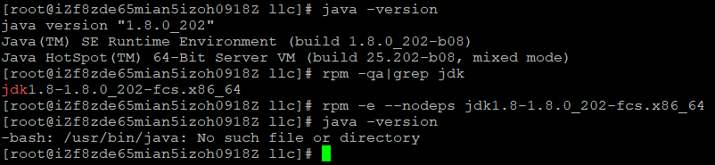# 检测jdk版本信息
rpm -qa|grep jdk
# 强制卸载
rpm -e --nodeps xxx安装
# 上传jdk对应的rpm包到/home/llc目录下
# 安装
rpm -ivh jdk-8u202-linux-x64.rpm
# 查看
java -version
Tomcat安装（解压缩安装）
下载tomcat：
apache-tomcat-9.0.54.tar.gz可以本地下载后上传，也可以直接在Linux上下载：
wget https://archive.apache.org/dist/tomcat/tomcat-9/v9.0.54/bin/apache-tomcat-9.0.54.tar.gz
解压
tar -zxvf apache-tomcat-9.0.54.tar.gz
运行tomcat
# 进入apache-tomcat-9.0.54下的bin目录
# 执行：startup.sh --> 启动tomcat
# 执行：shutdown.sh --> 关闭tomcat
./startup.sh
./shutdown.sh访问测试：公网IP:8080
注意：安全组需要开放8080端口。
防火墙
systemctl status firewalld
# 开启
service firewalld start
# 重启
service firewalld restart
# 关闭
service firewalld stop
# 查看防火墙规则
firewall-cmd --list-all # 查看全部信息
firewall-cmd --list-ports # 只看端口信息
# 开启端口
firewall-cmd --zone=public --add-port=80/tcp --permanent
# 重启防火墙
systemctl restart firewalld.service
# 命令含义：
--zone # 作用域
--add-port=80/tcp # 添加端口，格式为：端口/通讯协议
--permanent # 永久生效，没有此参数重启后失效
Docker安装（yum安装）
官网安装参考手册：https://docs.docker.com/install/linux/docker-ce/centos/
查看服务器系统版本
[root@iZf8zde65mian5izoh0918Z ~]# cat /etc/redhat-release
CentOS Linux release 7.6.1810 (Core)安装gcc相关
yum -y install gcc
yum -y install gcc-c++
# yum install 为安装命令
# -y 所有的提示都为y卸载旧版本
yum -y remove docker docker-common docker-selinux docker-engine
# 官网版本
yum remove docker \
docker-client \
docker-client-latest \
docker-common \
docker-latest \
docker-latest-logrotate \
docker-logrotate \
docker-engine安装需要的软件包
yum install -y yum-utils device-mapper-persistent-data lvm2
设置仓库
yum-config-manager --add-repo https://download.docker.com/linux/centos/docker-ce.repo
# 国内镜像
yum-config-manager --add-repo http://mirrors.aliyun.com/docker-ce/linux/centos/docker-ce.repo更新yum软件包索引
yum makecache fast
安装Docker CE
yum -y install docker-ce docker-ce-cli containerd.io
启动Docker
systemctl start docker
测试
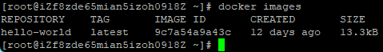docker version
# 通过运行映像验证Docker引擎安装是否成功
docker run hello-world
# 此命令下载测试映像并在容器中运行它。当容器运行时，它会打印一条确认消息并退出
docker images
wget
Linux wget是一个下载文件的工具，用于命令行。
安装wget：
yum install wget下载示例：
使用
wget下载单个文件，下载过程中会显示进度条。wget https://archive.apache.org/dist/tomcat/tomcat-9/v9.0.54/bin/apache-tomcat-9.0.54.tar.gz
使用
wget -O下载并以不同的文件名保存wget默认会以最后一个”/”后面的字符串来命名，对于某些链接命名可能出错，此时可以使用-O参数指定文件名
wget -O tomcat.tar.gz https://archive.apache.org/dist/tomcat/tomcat-9/v9.0.54/bin/apache-tomcat-9.0.54.tar.gz
使用
wget -c断点续传：重新启动下载中断的文件
对于下载大文件时突然由于网络等原因中断非常有帮助，可以继续接着下载而不需要重新下载。wget -c url
使用
wget -b后台下载对于下载非常大的文件的时候，可以使用参数-b进行后台下载。
wget -b https://archive.apache.org/dist/tomcat/tomcat-9/v9.0.54/bin/apache-tomcat-9.0.54.tar.gz
# 可以使用以下命令来察看下载进度
tail -f wget-log使用
wget –-spider测试下载链接正确下载链接
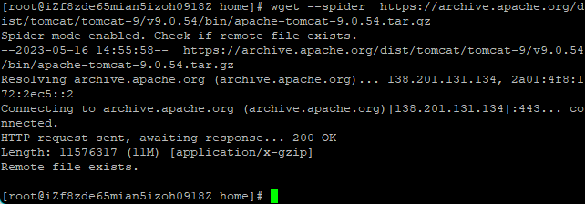错误下载链接
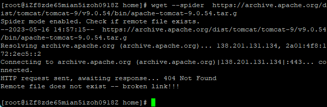